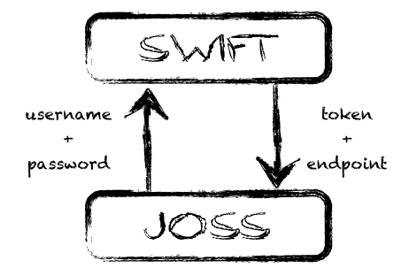
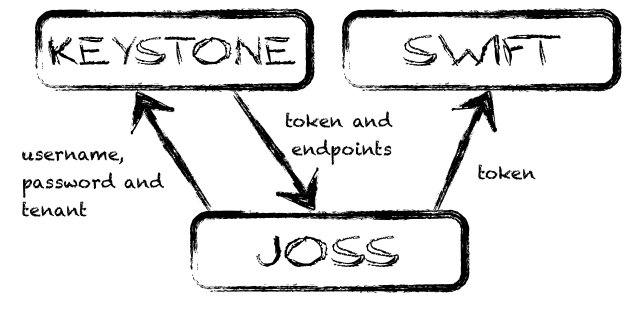

Authentication
JOSS supports two modes of authentication:
- Basic authentication; authenticates against the Swift container
- TempAuth authentication; authenticates against the Swift TempAuth module
- Keystone authentication; authenticates against a Keystone instance
Important! Keystone authentication is the JOSS default.
The JOSS authentication architecture is based on a stateful session.
Basic authentication
Basic authentication uses swift as its authentication resource. A call with username and password is made directly to Swift. Swift will authenticate the user and send back the endpoint (URL on Swift for the Swift REST API) and the token (passed to Swift with each call).
 AccountConfig config = new AccountConfig()
.setUsername( username)
.setPassword(password)
.setAuthUrl(url)
.setAuthenticationMethod(AuthenticationMethod.BASIC);
Account account = new AccountFactory(config).createAccount();
TempAuth authentication
TempAuth authentication uses the TempAuth module as its authentication resource. Read more in the TempAuth documentation. A call with username and password is made to TempAuth. The module will authenticate the user and send back the endpoint (URL on Swift for the Swift REST API) and the token (passed to Swift with each call).
AccountConfig config = new AccountConfig()
.setUsername( username)
.setPassword(password)
.setAuthUrl(url)
.setAuthenticationMethod(AuthenticationMethod.TEMPAUTH);
Account account = new AccountFactory(config).createAccount();
Keystone authentication
Keystone authentication uses Keystone as its authentication resource. A call with username and password is made to Keystone. Keystone will authenticate the user and send back the various Swift endpoints and the token (passed to Swift with each call). Keystone is the JOSS default.
Keystone knows the concept of tenants, which is best compared to a project or space. JOSS needs to know the tenant. You have four options for identifying the tenant:
- pass the tenant ID
- pass the tenant name
- pass both the tenant ID and the tenant name
- ask JOSS to identify the tenant
Pass the tenant ID
Pass just the tenant ID and use that to look up the tenant.
AccountConfig config = new AccountConfig()
.setUsername( username)
.setPassword(password)
.setAuthUrl(url)
.setTenantId(tenantId);
Account account = new AccountFactory(config).createAccount();
Pass the tenant name
Pass just the tenant name and use that to look up the tenant.
AccountConfig config = new AccountConfig()
.setUsername( username)
.setPassword(password)
.setAuthUrl(url)
.setTenantName(tenantName);
Account account = new AccountFactory(config).createAccount();
Pass the tenant ID and the tenant name
Pass both tenant ID and name and use both for looking up the tenant.
AccountConfig config = new AccountConfig()
.setUsername( username)
.setPassword(password)
.setAuthUrl(url)
.setTenantId(tenantId);
.setTenantName(tenantName);
Account account = new AccountFactory(config).createAccount();
Ask JOSS to identify the tenant
JOSS can ask Keystone for a list of tenants belonging to the username/password. It will then pick the one tenant it finds. With the username, password and tenant, JOSS will authenticate against Keystone. This only works if the user has exactly one tenant!
AccountConfig config = new AccountConfig()
.setUsername( username)
.setPassword(password)
.setAuthUrl(url)
.setAuthenticationMethod(AuthenticationMethod.KEYSTONE);
Account account = new AccountFactory(config).createAccount();
Architecture
When you create an Account, you are holding a stateful session. It will remember the authentication token and pass that on with every request to the Swift container. Normally, Keystone tokens are valid for 24 hours, but this may differ per Swift implementation.
Whenever an Unauthorized exception is thrown (JOSS maps a 401 HTTP response to an UnauthorizedException), JOSS will automatically try to reauthenticate. This functionality exists to support long-lived applications that need to have a constant connection.
Reauthentication can be disallowed by setting .allowReauthenticate=false on the AccountConfig or AccountFactory objects.